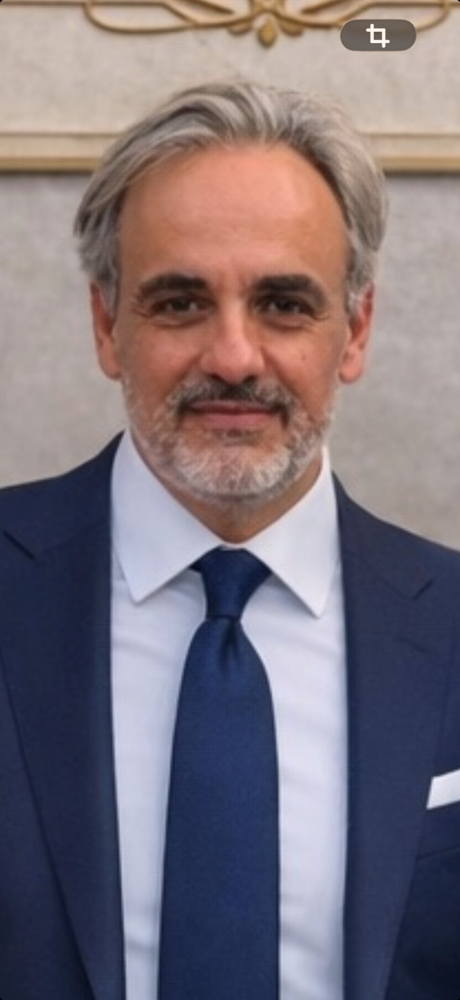
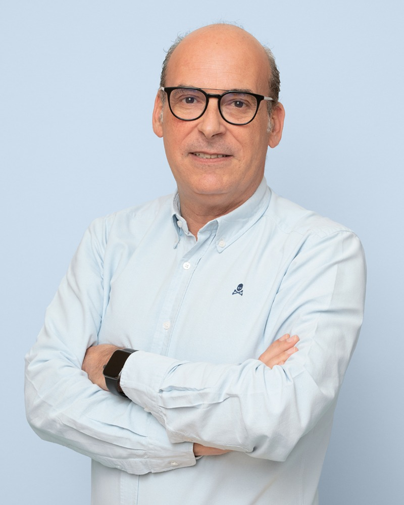
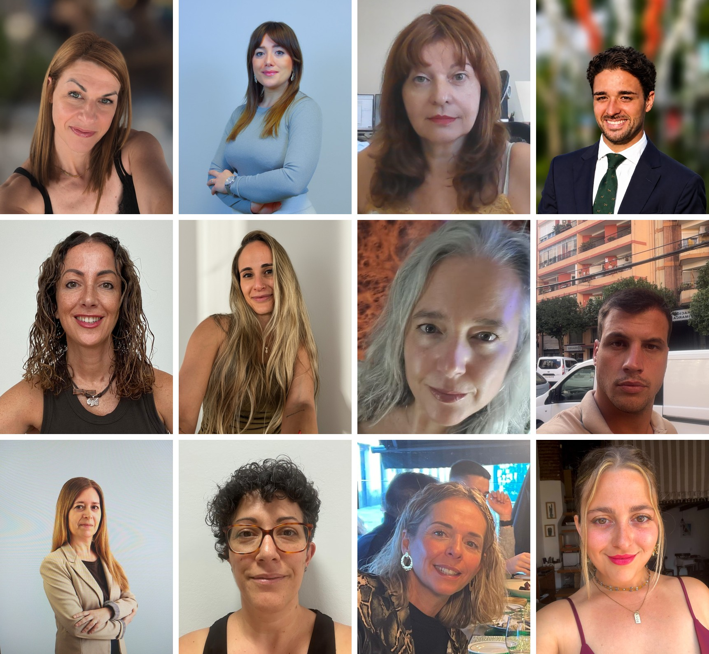

2006 — 2026
20 AÑOS
COMPARTIENDO CAMINO.
Dos décadas creciendo, aprendiendo, abriendo mercados y construyendo relaciones con clientes y proveedores dentro y fuera de España.
Dos décadas creciendo, aprendiendo, abriendo mercados y construyendo relaciones con clientes y proveedores dentro y fuera de España.
Rinfresco nació el 29 de septiembre de 2006. Durante estos años hemos ampliado categorías, mercados y relaciones comerciales, manteniendo una idea sencilla: trabajar con seriedad, cercanía y continuidad.
Hoy comercializamos perfumería, alimentación, droguería y, por supuesto, bebidas: categorías distintas que reflejan cómo ha evolucionado y se ha diversificado Rinfresco a lo largo de estos 20 años.
Bebidas, alimentación, perfumería y droguería son hoy las cuatro grandes familias con las que trabajamos. Cuatro áreas distintas, una misma forma de hacer negocio: detectar oportunidades, mover producto con agilidad y construir relaciones comerciales a largo plazo.
Rinfresco nació de la iniciativa de Miguel y Alberto. Dos décadas después, la empresa es mucho más grande que aquella primera idea, pero seguimos entendiendo el negocio de la misma manera: relaciones duraderas, trabajo serio y confianza.


Hoy somos 14 personas. Un equipo pequeño en número, pero grande en responsabilidad, experiencia y capacidad para adaptarse a cada operación.

Composición provisional con las imágenes actuales. Cuando hagamos la fotografía oficial del aniversario, sustituiremos esta imagen por la foto de los 14 juntos.
“Las buenas relaciones se construyen operación a operación, año tras año.”
Gracias por confiar, repetir, exigirnos y permitirnos crecer con vosotros. Cada relación duradera ha formado parte de la evolución de Rinfresco.
Gracias por acompañarnos, responder cuando hacía falta y ayudarnos a construir relaciones que han ido mucho más allá de una operación puntual.
Seguimos con la misma ambición de crecer, abrir oportunidades y construir relaciones comerciales duraderas.
Por los próximos 20 años haciendo negocio juntos.